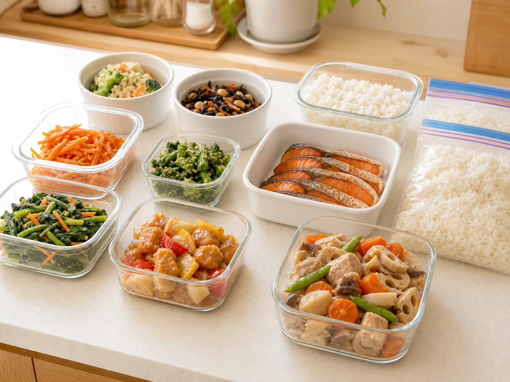

作り置き
主菜・副菜を組み合わせて、忙しい平日に温めるだけで使いやすい形に整えます。
ご家庭の暮らしや好みに合わせて、
作り置き・下味冷凍・日々のおかずづくりをお手伝いします。
子どもから大人まで、
みんなが安心して食べられる家庭料理をお届けします。


冷蔵庫の食材、好き嫌い、保存方法に合わせて、平日の食卓が少し軽くなるように準備します。買い物前の相談や、離乳食・幼児食の作り分けもご家庭の状況に合わせて整えます。
主菜・副菜を組み合わせて、忙しい平日に温めるだけで使いやすい形に整えます。
焼くだけ、煮るだけで仕上げやすい冷凍ストックを、ご家庭の調理しやすさに合わせて準備します。
月齢、食べ進み、食材の形状を伺い、無理のない範囲で食べやすく整えます。
味付け、大きさ、好き嫌いに配慮しながら、家族ごはんと両立しやすい内容にします。
対象食材、調理器具、食材管理の状況を確認したうえで、対応可否をご案内します。
冷蔵庫の食材、保存方法、食べる人数に合わせて、日々使いやすいメニューづくりを支えます。
品数やメニューは自由に組み合わせ可能です。
帰宅後すぐに食べられる主菜や副菜を、平日に使いやすい形で用意します。
食べ進みや好みに合わせ、少量ずつ使えるストックづくりを相談できます。
冷蔵庫にある食材やご家庭の味付けに合わせて、無理なく使える内容を整えます。
必要な配慮を事前に確認し、対応できる範囲を丁寧にご案内します。
作り置き、離乳食・幼児食、食材の有無などを
お知らせください。
メニューの方向性、所要時間、料金、交通費を
確認します。
ご家庭のキッチンで、日々使いやすい食事づくりを
行います。
はい。品数やメニューは自由に組み合わせできます。
月齢や食べ進みに合わせて相談できます。
内容と調理環境を確認し、対応可否をご案内します。
基本はご家庭にある食材を使い、必要な準備や買い足しは事前にご案内します。
はい。初回お試しプランから相談できます。